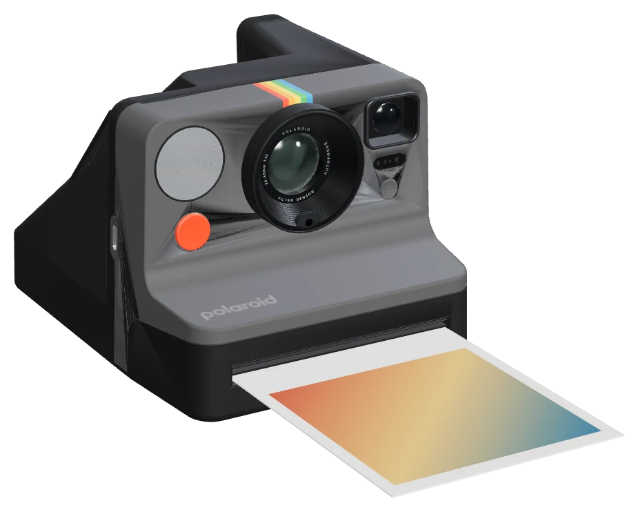
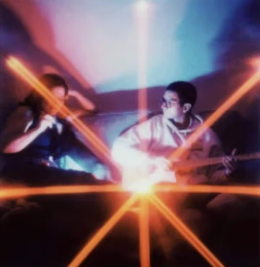
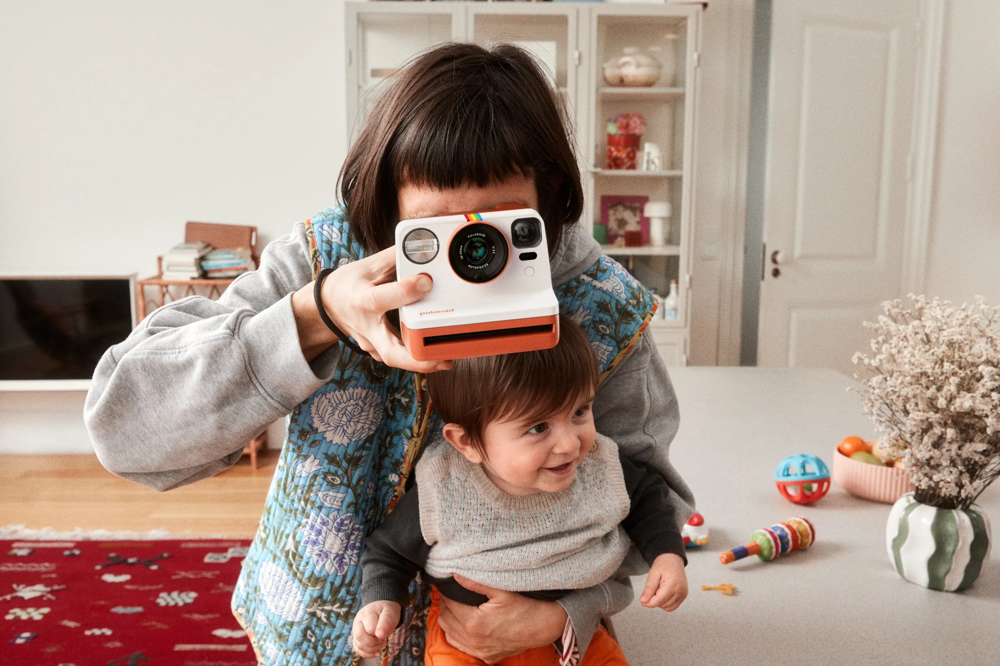

Polaroid Now :
누구나 쉽게 쓰는 즉석카메라
2렌즈 오토포커스와 이중노출·셀프타이머로, 일상의 순간을 풀사이즈 Polaroid 필름에 바로 남겨요.
일상의 모든 순간.
모두 Polaroid Now로.

생일, 여행, 평범한 저녁 식탁까지. 찍는 순간 바로 인화해 손에 쥐여 주는 일상 기록용 카메라예요.
전원을 켜고 셔터만 누르면 끝. 즉석카메라가 처음이어도 바로 찍을 수 있어요.
Three ways to make
every moment count
-
Two-lens autofocus
가까운 얼굴도, 먼 풍경도
알아서 또렷하게 -
 Double exposure mode
Double exposure mode두 번 찍으면
두 장면이 한 장에 -
 Bright light exposure
Bright light exposure강한 햇빛 아래서도
더 선명하게

The classic analog instant camera. With self-timer and double-exposure modes, an upgraded two-lens autofocusing system and made with 40% recycled materials in different colors. All so you can capture real life on iconic, full-sized Polaroid film.


Polaroid NOW filter
See the world through
different colored glasses.

The world is your laboratory and the filters are your test tubes. Pull up your sleeves and start experimenting with starburst, red vignette, orange, blue, and yellow effects with your Polaroid Now or Now+ Generation 3 camera. And when you're done protect your lens with included lens cap. See the world through different colored glasses. Not compatible with Polaroid Now Generation 1 or 2 Cameras.
Scan and share your photos in the Polaroid App.
DOWNLOAD APPIOSANDROID
 321
321

Since 1937, Polaroid has turned
moments into things you can hold.